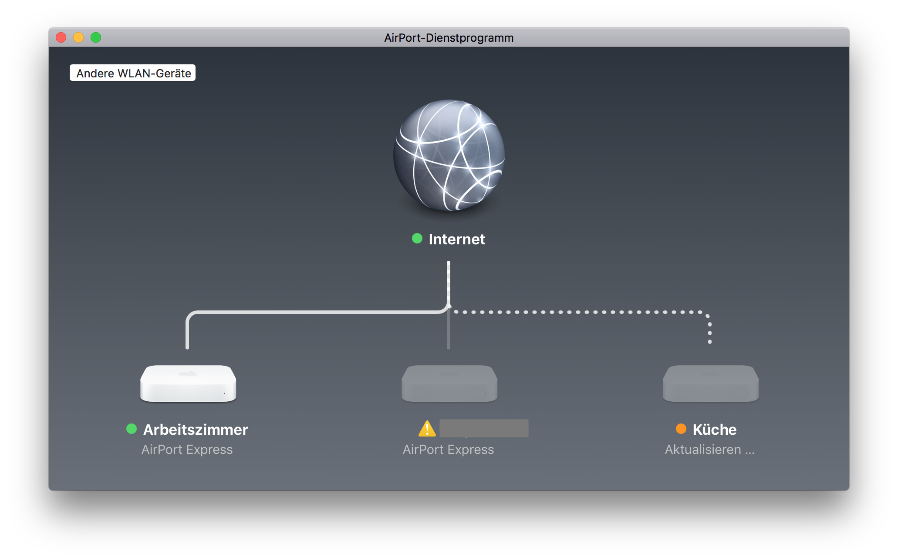
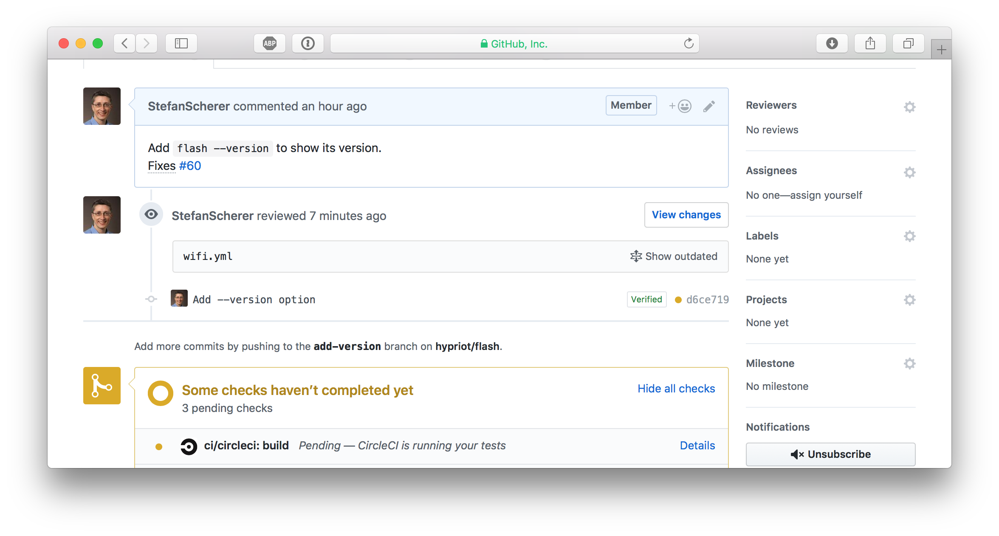

What a wonderful day. I just changed some code in one of my weekend projects and then it happened. I totally screwed it up, I accidentally pushed some secrets to a GitHub pull request. Yes, ship happens. We're all humans and make mistakes. We normally blog about success, but I use my mistake to talk about how to fix this and how to prevent it from happening in the future again.
The bad mistake
Well, I edited some code of my flash script to flash Raspberry Pi SD cards. This tool can also inject configuration to boot your Pi without any manual interaction to a specified hostname, or add your WiFi settings so it can join your wireless network automatically.
I pushed some code to a work-in-progress pull request when I saw my mistake on GitHub:
WTF, how did I ... ?
Well, for convenience reasons I kept a configuration file in the repo to easily flash a new SD card image with WiFi settings. And I can't really remember, but I eventually typed git add . and git push some minutes ago without recognising that this was a really, really bad idea.
Panic, what next?
I immediatelly went to my Ubiquity Cloud controller and changed the Wireless Network Security Key.
But that was the next mistake. OK, I've changed the security key. But after a moment I realized that I also have some unattended boxes lying around in my house that use the old key to connect to my WiFi. My AirPort Express boxes for example are connected wirelessly.
Calm down, think, and organize
OK, changing the Security Key as first step is probably not the best idea. I don't want to run to each box with a patch cable to reconfigure it. Instead I've changed the key back to the old, compromised one and reconfigured all my wireless devices that I can reach through WiFi.
Reconfigure wireless devices first
The devices with the dotted lines are connected through WiFi. Edit the wireless network password with the AirPort app on your Mac.
After that change they will drop out of WiFi as they now have the new, but not actually working password.

Repeat that for all devices and think of other wireless devices that you can update without climbing up ladders or other hidden places.
Change your WiFi security key
After that I changed the wireless security key in the Unify cloud controller. Save the new WiFi key in your password manager, I use 1Password
After reconnecting to the new and now secure WiFi with the updated key I thought of the next steps. OK, the whole family has to update their smartphones and tables to connect to the WiFi again. That is managable. Now I'm coming to the next phase.
Cleaning up
The next steps was to clean up the pull request to get rid of the accidentally added files. You might think when you are quick nobody has seen your change and you can skip changing your WiFi secret at all. I'll prove you wrong in the next few minutes.
First I commented on my mistake to laugh at it, that's just relieving.
Remove files, remove commits
Now it's time to clean up the pull request branch and remove the unwanted files. We could just do git rm wifi.yml, but this will be added as a new commit to Git. Git has a history of each commit. I also want to get rid of these old commits.
These were my steps to cleanup the pull request branch.
I first squashed the pull request to one commit.
git rebase -i $(git merge-base $(git rev-parse --abbrev-ref HEAD) master)
Then in the editor just pick the first commit and change all other commits to squash.
Now I have only one commit. This commit can be easily undone with
git reset HEAD~1
Then add your secret files to the .gitignore file and add everything and commit it again.
Now your local pull request branch has only the files wanted in one single commit. But GitHub still stores the secret files. With the next command we'll fix that.
git push -f
When things went bad sometimes a git push -f is needed. But beware: This will overwrite the history in your Git repo. You really have to know what are you doing here. Don't use git push -f in a panic. Calm down first. Otherwise you will make it even worse.
But to remove the unwanted commits you need to overwrite the pull request branch.
git push -f origin add-version
Everything concealed? No way
When you now look at the GitHub pull request you might think that every secret vanished and it's safe to keep the old WiFi password. No, GitHub has an incredible database, don't think that that this information was removed.
Each pull request can be commented and even after a git push -f some of the comments got outdated on source that no longer exist. But this is still visible and retrievable.

Look closer, there is a "Show outdated" link. You can open this
So whenever such a data breach happens, be prepared to change your secrets. If it hurts, do it more often.
Understanding the cause
After all this disaster recovery and cleanup there is still something to learn. What was the root cause and how can I prevent to make the same mistake again?
git add .
The git add . command adds all modified and also untracked files and git push pushes all this code to GitHub into your already open pull request branch.
Yes, I'm lazy and often commit everything as I'm normally work on one thing in a project.
I normally recognize such secret files from adding them, but as I realised the hard way is that you will type git add . at some point in a hurry without even recognizing it.
I scrolled up my terminal and found the situation where everything went wrong very soon.
This is a bad smell having untracked files.
What can this be fixed?
- Learn to not use
git add .. I don't think that will work as I'm trained to type this and it's hard to break a habit. - Maybe prevent
git add .?, see Stack Overflow I'm not going this hard way. - Don't leave untracked files in your repo, yeah that sounds better.
- Add local secret files to your
.gitignorefile. So agit add .is harmless. - Don't create such local secret files at all. Well you want something automated and just need config files with secrets.
- Create local files without the secrets and inject secrets on the fly. That also sounds like a good plan.
I'll look closer into the last idea to inject secrets on the fly. Don't leave secrets unprotected on your harddrive. Use command line interfaces for your password managers.
- Use
pass- Pass: The Standard Unix Password Manager that keeps secrets in GPG encrypted files which are also under version control in a separate Git repo. - I'll also have a look at the 1Password command line tool
op.
You cannot change the past, you only can learn to make it better in the future.
I hope you find this blog post useful and I love to hear your feedback and experience about similar mistakes or better tips how to protect yourself from doing mistakes. Just drop a comment below or ping me on Twitter @stefscherer.